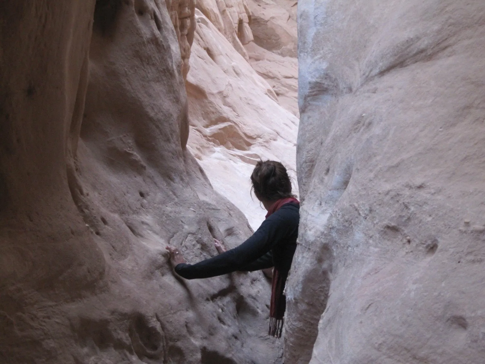
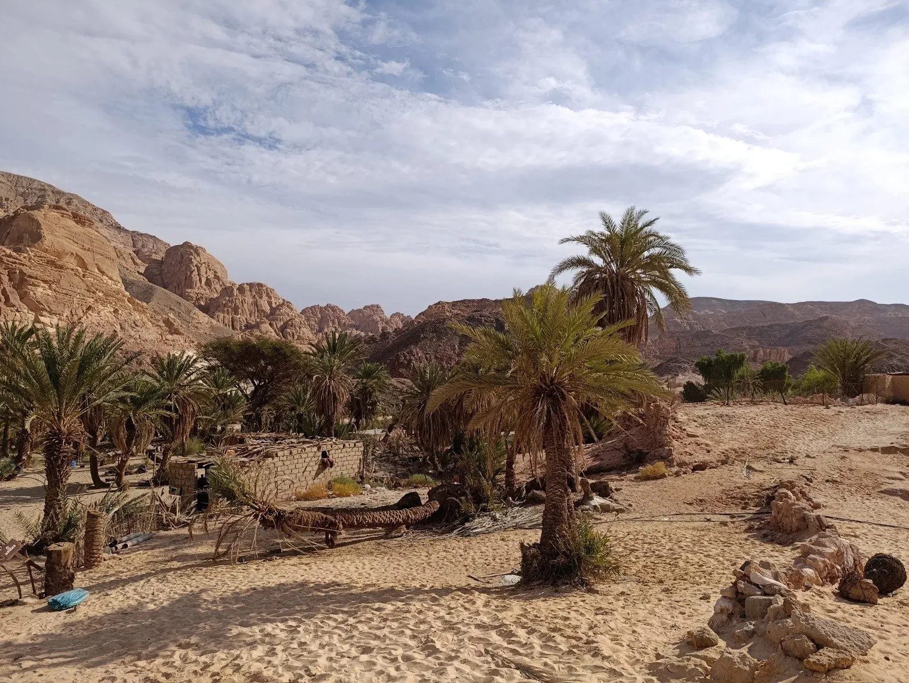
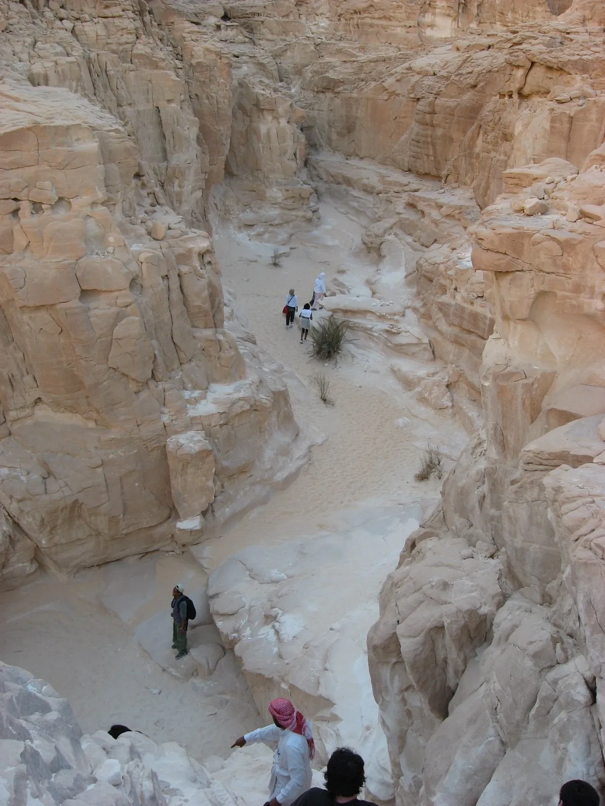

Als een dag op een kameel verandert hoe je de woestijn ziet, verandert een nacht erin hoe je haar herinnert. Deze tweedaagse kameeltocht vanuit Dahab rijgt canyonwandelingen, oude inscripties, een nacht kamperen bij de ingang van de Closed Canyon en een lunch bij de oase Ein Hudra aan elkaar, de hele weg in het tempo van de woestijn. Joseph en Annet leiden de tocht samen, aangevuld met een lokale bedoeïenenkameelgids en zijn kamelen.

Dag 1: van je hotel naar een kamp in de canyons
We halen je om 8.00 uur op bij je hotel en rijden landinwaarts naar Wadi Ghazalah, waar je kameel en kameelgids op je wachten. Een kameelrit en een canyonwandeling brengen ons naar de Hamata Canyon, gevolgd door een verse lunch in de woestijn. Daarna rijden we naar Naqb el Hamidat, een oude bergpas, waar we afstappen en naast de kamelen lopen, langs rotsinscripties van kruisvaarders en vroege bedoeïenen: een gastenboek in steen. Een laatste rit brengt ons naar het kamp bij de ingang van de Closed Canyon, waar het diner boven het vuur wordt bereid onder een hemel zonder enige lichtvervuiling.

Een gastenboek in steen, en Joseph en Annet weten hoe je het leest.
Dag 2: de Closed Canyon, de oase & de White Canyon
Na het ontbijt in het kamp wandelen we in de koele ochtend door de Closed Canyon, een van de indrukwekkendste smalle kloven van de Sinaï. Thee bij het vuur terwijl de auto en de kamelen worden geladen, en dan brengt een kameelrit ons naar de oase Ein Hudra, een van de oudste en mooiste van de Sinaï, voor een lunch tussen de palmen. Daarna wandelen we door de White Canyon, met zijn lichte, smalle wanden, een van de meest gefotografeerde plekken van de Sinaï, voordat een laatste kameelrit ons naar de weg brengt en we terugrijden naar Dahab.


Inbegrepen
- Ophalen & terugbrengen in Dahab
- Kameelrit met een lokale kameelgids
- Alle maaltijden & drankjes, incl. diner, ontbijt & lunch
- Woestijnkamp voor de nacht bij de Closed Canyon
- Je woestijngidsen
- Alle entreegelden
Niet inbegrepen: fooien en persoonlijke uitgaven.
Neem mee
- Goede wandelschoenen
- Een lange, comfortabele broek: prettiger op een kameel dan een korte broek
- Warme kleding: de nachten in de woestijn zijn koud
- Je paspoort (controleposten op de wegen in het binnenland)
- Wat contant geld voor souvenirs van de lokale bedoeïenen
Prijs
€600 per auto, tot 4 personen, beide dagen
€200 p.p. kameel & kameelgids, beide dagen
Een stel betaalt €1000 voor de twee dagen; een groep van vier betaalt €1400. Met meer dan vier? Stuur ons een bericht via WhatsApp.
Heb je maar één dag?
Onze kameeltocht van één dag gaat naar de Hamata Canyon en terug, met een canyonwandeling en een lunch in de woestijn ertussen.
Bekijk de kameeltocht van één dag